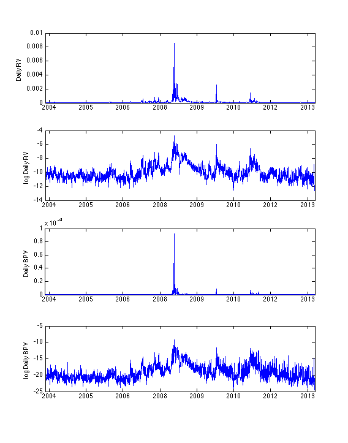

Daily RV and BPV from SP500 data
Uses a average sparse RV calculation method from minute data. Each day there are 390 minutes active for trading. The log RV and log BPV are also plotted so that the plots are more informative
load('SP500INDEX_LNR_INTRADAY1MIN_2004_2013.mat') % RV calculation group = 5; %sparse lag = 5 processed = 0; data_l = length(sp500ret); day_l = length(unique(sp500ret(:,1))); i = 1; rv = zeros(day_l,1); dates = zeros(day_l,1); rvg = zeros(group,1); while processed < data_l di = sp500ret(processed+1,1); for g = group:-1:1 reti = sp500ret(processed+1+g:processed+385+g,3); retig = sum(reshape(reti,5,length(reti)/5),1); rvg(g) = sum(retig.^2); end rv(i) = mean(rvg); dates(i) = di; i = i+1; processed = processed+390; end dates = datenum(int2str(dates),'yyyymmdd'); figure(1) set(gcf,'units','centimeters','position',[0 0 20 30]) subplot(4,1,1) plot(dates,rv) datetick('x','keepticks','keeplimits') xlim([min(dates) max(dates)]) ylabel('Daily RV') subplot(4,1,2) plot(dates,log(rv)) datetick('x','keepticks','keeplimits') xlim([min(dates) max(dates)]) ylabel('log Daily RV') % BPV Calculation processed = 0; bpv = zeros(length(rv),1); i = 1; while processed < data_l reti = sp500ret(processed+1:processed+390,3); reti2 = reti.^2; bpv(i) = sum(reti2(1:end-1).*reti2(2:end))*390; i = i+1; processed = processed + 390; end subplot(4,1,3) plot(dates,bpv) datetick('x','keepticks','keeplimits') xlim([min(dates) max(dates)]) ylabel('Daily BPV') subplot(4,1,4) plot(dates,log(bpv)) datetick('x','keepticks','keeplimits') xlim([min(dates) max(dates)]) ylabel('log Daily BPV')